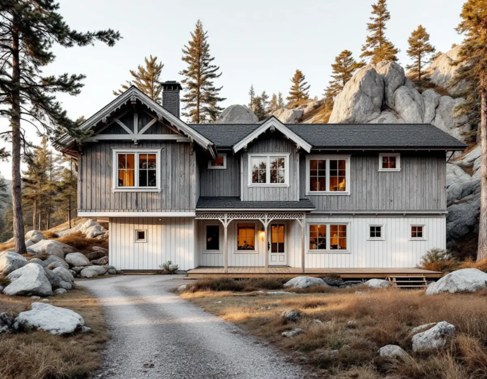
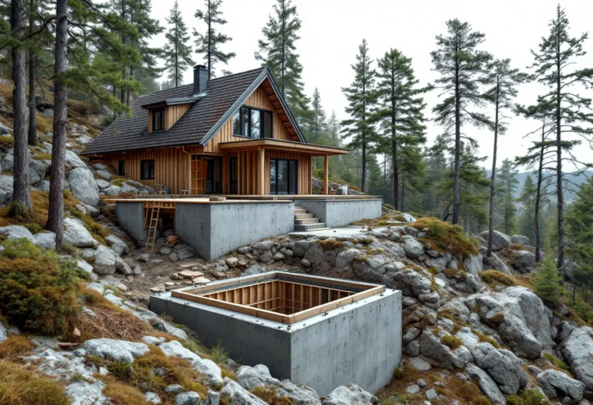

Detaljplanen
Vi tar reda på vilken plan och vilken byggrätt som gäller för fastigheten.
På Brevikshalvön har antalet åretruntboende ökat sedan 1990-talet, och kommunen har beslutat att möta att allt fler vill bo permanent på östra Tyresö. Hur mycket ett hus där får växa beror på vilken detaljplan som gäller för tomten. Geal Entreprenad AB bygger till småhus som total entreprenad. Här använder vi detaljplanen för Fasanvägen etapp 13 som exempel på hur byggrätten kan se ut.

Enligt planbeskrivningen för Fasanvägen etapp 13 tillhörde Brevikshalvön Tyresögodset fram till 1930. Under 1930–50-talen styckades stora arealer av för fritidshus. När plan- och bygglagen trädde i kraft 1987 började de gamla avstyckningsplanerna gälla som detaljplaner, men utan bestämmelser om byggrätt.
Kommunfullmäktige antog 1989 nya planbestämmelser för att behålla områdets karaktär och användningen för fritidsbebyggelse. De vann laga kraft 1991 och begränsade byggrätten till 50 kvadratmeter för huvudbyggnad och 30 kvadratmeter för uthus. År 2013 ändrades bestämmelserna för två områden på halvön till 105 kvadratmeter bruttoarea med en högsta nockhöjd på 9,5 meter för en huvudbyggnad i två plan.
Den nya planen för Fasanvägen etapp 13 omfattar 119 bostadsfastigheter. Den är en omvandlingsplan: kommunalt vatten och avlopp byggs ut, vägarna breddas och fastigheterna får större byggrätter som kompensation för de gatukostnader som uppstår. Befintliga hus med bygglov har tillkommit i laga ordning enligt den tidigare planen, men vid om-, till- eller nybyggnad ska byggnaden anpassas till den nya planens bestämmelser.

I planen för Fasanvägen etapp 13 får varje fastighet välja ett av tre alternativ för huvudbyggnaden. Det största ger högst 200 kvadratmeter byggnadsarea och en nockhöjd på högst 6,5 meter. Är nocken högre än 4,5 meter ska takvinkeln vara minst 27 grader, så att huset upplevs som ett enplanshus. Det alternativet passar inte på sluttande mark, eftersom det kräver mer omfattande markarbeten.
Det mellersta alternativet ger 150 kvadratmeter och en nockhöjd på högst 7,5 meter, med minst 27 graders takvinkel om nocken går över 6,5 meter. Det minsta ger 120 kvadratmeter men en nockhöjd på 8,0 meter och ingen lägsta takvinkel, så att översta våningen kan utnyttjas fullt ut. Planen beskriver det som lämpligt i kuperad terräng.
Komplementbyggnader får på fastigheter om minst 3 000 kvadratmeter uppta sammanlagt 60 kvadratmeter, och på mindre fastigheter 40 kvadratmeter. De ska stå fristående och ha en nockhöjd på högst 4,5 meter. Innan vi ritar en tillbyggnad räknar vi ut hur mycket av byggrätten huset redan använder och vilken variant det passar in i.
Planen kräver att byggnader och infarter anpassas till den naturliga topografin och till skyddsvärda träd, som kräver marklov för att fällas. Utfyllnad för att skapa platåer för gräsmattor ska undvikas, och schaktning eller fyllning för att göra ett suterränghus är bara tillåtet nära den planerade byggnaden, för en infart eller för ledningar och gata. Huvudbyggnader ska stå minst 4 meter från fastighetsgränsen av brandskyddsskäl, och mot gatan finns en sex meter bred zon med prickmark.
Inom områden med risk för skred får den ökade belastningen vara högst 20 kPa. Det motsvarar enligt planbeskrivningen en byggnad i en våning eller en meters uppfyllnad, och för något tyngre krävs en utredning. Där det finns rasrisk ska slänten besiktigas. Grundläggningen ska väljas så att den inte ger översvämningsrisk, dränering får inte göras under grundvattennivån och vid sprängning eller schakt krävs en geohydrologisk undersökning innan bygglov kan ges.
Planbeskrivningen påpekar att det utöver planens byggrätt går att bygga lovbefriade åtgärder enligt plan- och bygglagen. Sedan den 1 december 2025 är det en tillbyggnad på sammanlagt högst 30 kvadratmeter som inte går över taknocken, och enligt Boverket får en sådan tillbyggnad strida mot detaljplanen. Bestämmelser om skyddsåtgärder och skyddsanordningar ska dock följas.
Tyresö kommun skriver att tidigare skärmtak och attefallstillbyggnader räknas in, att bygglov krävs om fastigheten ligger i ett kulturhistoriskt särskilt värdefullt område och att en anmälan och ett startbesked kan behövas om konstruktionen berörs. Hur startbesked och slutbesked går till beskriver vi under byggföretag i Tyresö.
Vi tar reda på vilken plan och vilken byggrätt som gäller för fastigheten.
Berg, slänter, träd och avståndet till gräns och gata ses över på plats.
Husets nuvarande byggnadsarea och bruttoarea räknas mot planen och den lovfria potten.
Grund, stomme, tak och markarbeten anges var för sig.
Vi tar fram underlaget för bygglov, anmälan eller frivilligt lov.
Grundläggningen anpassas till marken innan stommen reses.
Rotavdraget är 30 procent av arbetskostnaden, högst 50 000 kronor per person och år och högst 75 000 kronor tillsammans med rutavdrag. Material och resor ger inget avdrag.
En tillbyggnad av ett småhus ger avdrag om en av dess sidor sitter ihop med husets yttervägg till minst 75 procent eller om det finns en dörr emellan, och om bostaden är äldre än fem år. Markarbete ger avdrag när det syftar till att utöka bostadsytan eller försörja bostaden med bland annat värme, vatten och avlopp. Ett helt nytt fristående hus ger inget avdrag. Vi drar av rotavdraget direkt på fakturan.
Berg och slänter, grundläggningsmetoden, hur långt material måste transporteras på tomten och om tillbyggnaden ryms i planen eller kräver lov påverkar mest. Efter ett gratis platsbesök får du ett skriftligt kostnadsförslag.
Mer boyta i samma hus.
Tillbyggnad →Takbyte, takbesiktning och plåtarbeten.
Takläggare i Tyresö →Solberga, Raksta och Brevik.
Takrenovering i Tyresö →VA-anslutning, vattenmätare och dagvatten.
Attefallshus i Tyresö →LTA-avlopp, källarbadrum och golvbrunn.
Badrumsrenovering i Tyresö →Startbesked, utstakning och slutbesked.
Byggföretag i Tyresö →Fritidshus som blivit helårshus på Brevikshalvön.
Fasadmålning i Tyresö →Timmerhus, fritidshus och villor i Tyresö.
Fasadrenovering i Tyresö →Gamla bågar och beslag i Tyresö.
Fönsterbyte i Tyresö →Fritidshus som byggts om till villor.
Golvläggare i Tyresö →Slipa och spara gamla brädgolv.
Golvslipning i Tyresö →Stugor som blir helårshus.
Köksrenovering i Tyresö →Stuprör, rännor och beslag i Tyresö.
Plåtslagare i Tyresö →Nytt tak med säker väg till skorstenen.
Takbyte i Tyresö →Ny tapet i rum med eldstad.
Tapetsering i Tyresö →Rödfärgade hus, stugor och interiörer i Tyresö.
Målare i Tyresö →Stugor, altaner och tillbyggnader.
Snickare i Tyresö →